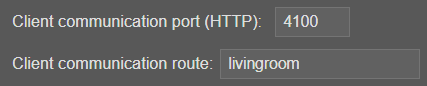

API Client
Config
Object globale regroupant la configuration du client.
Config.modules
Object regroupant la configuration des plugins. Cet objet est généralement utilisé dans les plugins pour récupérer une valeur de clé de propriété.
{
"modules": {
"myFirstPlugin": {
"version": "1.0",
"name": "my first plugin",
"rules": {
"test": ["test * (command|order)"]
}
}
}
}
const name = Config.modules.myFirstPlugin.name;
Message loggers
Logger methods are used to display messages in the A.V.A.T.A.R client console.
Possible data types for all loggers:
const str = 'a string';
const bool = true;
const arr = ['one', 'two', 3];
const obj = {key: "value"};
const f = () => console.log('hello');
info(...message)
Affiche un message d'information dans la console.
info(str, bool, arr, obj, f);
// returns in the console:
// info: a string true ["one","two",3] {"key":"value"} () => console.log('hello')
infoGreen(...message)
Affiche un message d'information en vert dans la console.
infoOrange(...message)
Affiche un message d'information en orange dans la console.
warn(...message)
Affiche un message d'avertissement en orange dans la console.
warn(str, bool, arr, obj, f);
// returns in the console:
// warn: a string true ["one","two",3] {"key":"value"} () => console.log('hello')
error(...message)
Affiche un message d'erreur en rouge dans la console
error(str, bool, arr, obj, f);
// returns in the console:
// error: a string true ["one","two",3] {"key":"value"} () => console.log('hello')
infoConsole(...message)
Affiche un message dans la console de développement de Chromium (cliquez sur F10 dans l'interface du client).
Warning
Du fait de la mise en bac à sable de Chromium, le rendu d'une fonction est impossible dans la console de développement.
Afficher une fonction génèrera une erreur. Tous les autres types de données sont possibles.
infoConsole(str, bool, arr, obj);
Dialog
Avatar.speak(tts[,callback, end, voice, volume, speed, pitch])
Exécute un tts sur le système audio (enceinte du client ou autre système déclaré).
| paramètre | type | Obligatoire | Default value | Values | Description |
|---|---|---|---|---|---|
tts |
string object |
oui | Le texte ou un tableau de textes à vocaliser. Peut être un texte simple, plusieurs textes séparés par un pipe ('|') ou un tableau de textes (les textes peuvent être séparés par un pipe ('|')). Une des valeurs sera choisie aléatoirement. | ||
callback |
function | non | Fonction de callback exécutée après le speak | ||
end |
boolean | non | true | true false |
Définie si la restitution de l'écoute sur le client est effectuée après le speak true: restitue l'écoute false: ne restitue pas l'écoute |
| voice | string | non | Config .voices .current[Config.voices.type] |
Voix à utiliser | |
| volume | number | non | Config.voices.volume | Volume de la voix | |
| speed | number | non | Config.voices.speed | Vitesse de la voix | |
| pitch | number | non | Config.voices.pitch | Intonation de la voix |
Exemples :
- Vocalise le tts et restitue l'écoute
Avatar.speak('Hello, what can i do for you?') - Vocalise un des tts aléatoirement et restitue l'écoute
Avatar.speak('Hello, what can i do for you?|Hi, can I help you?') - Vocalise un des tts aléatoirement et ne restitue pas l'écoute
Avatar.speak('Hello, what can i do for you?|Hi, can I help you?', null, false) - Vocalise un des tts aléatoirement, restitue l'écoute et exécute un callback ensuite
Avatar.speak(['Hello, what can i do for you?', 'Hi, can I help you?'], () => { // Do stuff }) - Vocalise le tts, ne restitue pas l'écoute et exécute un callback ensuite
Avatar.speak('Hello, what can i do for you?', () => { // Do stuff }, false) - Vocalise un des tts aléatoirement, ne restitue pas l'écoute et exécute un callback ensuite
Avatar.speak(['Hello, what can i do for you?|Hi, can I help you?', 'I\'m home. Can I get you anything?'], () => { // Do stuff }, false) - Vocalise le tts, restitue l'écoute avec une définition de voix
// definition: voice name, volume, speed, pitch Avatar.speak('Hello, what can i do for you?',null, null, "Microsoft Julie - French (France)", 100, 80, 1) //Another definition: voice name and speed Avatar.speak('Hello, what can i do for you?', null, null,"Microsoft Julie - French (France)", null, 70)
Avatar.Listen.end([activateListen])
Réactivation de l'écoute.
paramètre |
type | Obligatoire | Default value | Values | Description |
|---|---|---|---|---|---|
activateListen |
boolean | non | true | true false |
Définie si la restitution de l'écoute est effectuée. Dans tous les cas, la methode unmute est exécutée |
Exemples:
-
Réactivation de l'écoute
// Reactivation of listening Avatar.Listen.end(); // Do stuff -
tts sans la réactivation de l'écoute (end = false), callback et restitution de l'écoute
Avatar.speak('Hello, what can i do for you?', () => { // Do Stuff // ....... // Then reactivation of listening Avatar.Listen.end(); }, false)
Avatar.Listen.stop(forced)
Arrête l'écoute du client
paramètre |
type | Obligatoire | Description |
|---|---|---|---|
forced |
boolean | non | Force l'arrêt de l'écoute même si l'écoute est déjà normalement arrêtée |
Avatar.Listen.stop(true);
Avatar.Listen.start(forced)
redémarre l'écoute du client
paramètre |
type | Obligatoire | Description |
|---|---|---|---|
forced |
boolean | non | Force le démarrage de l'écoute même si l'écoute est déjà normalement démarrée |
Avatar.Listen.start(true);
Avatar.Listen.startListenAction()
Déclenche un dialogue (identique au mot clé déclencheur).
Avatar.Listen.startListenAction();
Avatar.Listen.stoptListenAction([forced])
Stoppe le dialogue en cours
paramètre |
type | Obligatoire | Default value | Values | Description |
|---|---|---|---|---|---|
forced |
boolean | non | true | true false |
Définie si la restitution de l'écoute sur le client est effectuée. Dans tous les cas, la methode unmute est exécutée |
Avatar.Listen.stoptListenAction(true);
Music play
Avatar.play(music[, type, end, callback])
Joue un fichier son sur le client
paramètre |
type | Obligatoire | Default value | Values | Description |
|---|---|---|---|---|---|
music |
string | oui | Le fichier son à jouer. Peut être un fichier, une adresse web locale ou distante. __dirname est remplacé par <A.V.A.T.A.R>/resources/app/core |
||
type |
string | non | local | local url |
- local: Fichier sur le client - url: Lien http local ou distant |
end |
string | non | after | before after |
Défini si la restitution de l'écoute sur le client est faite avant ou après de jouer le fichier son |
callback |
function | non | Fonction de callback exécutée après le fichier son |
Exemples:
- Absolute path on the client, reactivates listening before playing, no callback
Avatar.play('C:/music/siren.mp3', 'before'); - <A.V.A.T.A.R>/resources/app/core path on the client, reactivates listening after playing and a callback
Avatar.play('__dirname/music/siren.mp3', 'local', 'after', () => { // Do stuff }); - Music on the web, reactivates listening after playing and a callback
Avatar.play("https://ccrma.stanford.edu/~jos/mp3/cello.mp3", 'url', () => { // Do stuff }); - HTTP static folder on the client, reactivates listening after playing
const music = `http://${Config.http.client.ip}:${Config.http.client.port}/Love_Is_a_Battlefield.mp3`; // sets static local folder Avatar.static.set('C:/music', () => { // Plays music Avatar.play(music, 'url'); });
Avatar.stop([callback])
Stoppe le fichier son sur le client
paramètre |
type | Obligatoire | Description |
|---|---|---|---|
callback |
function | non | Fonction de callback exécutée après l'arrêt du fichier son |
Exemple :
Avatar.stop();
Files & folders
Avatar.static.set(folder[, calbback])
Définit un dossier statique sur le client.
paramètre |
type | Obligatoire | Description |
|---|---|---|---|
folder |
string | oui | Dossier à rendre static |
callback |
function | non | Fonction de callback |
Exemple:
// sets static folder on the client
Avatar.static.set('C:/music', () => {
// Do stuff
});
Encrypt/decrypt a value
Les méthodes Avatar.encrypt et Avatar.decrypt sont identiques aux méthodes du serveur.
HTTP request
Accès aux plugins par requète HTTP.
Format: http://<IP address>:<Port>/avatarclient-<route>/<Plugin>?key=value&key=value
| Paramètre | Obligatoire | Description |
|---|---|---|
| IP address | oui | L'adresse IP du client |
| Port | oui | Le port de communication du client |
| route | oui | La route HTTP définie dans les propriétés pour le client |
| Plugin | oui | Le nom du plugin à exécuter |
| key=value | non | Les paramètres de l'object data à passer à la méthode action du plugin Si une clé de paramètre est égale à command alors l'object data sera {action: {command: value, key: value} sinon {key: value} |
Tip
La configuration du port HTTP et de la route doivent être faites dans les propriétés du Plugin

Exemples:
/** Client IP address: 192.168.2.35
// Port: 4100
// Route: 'livingroom'
// Plugin: myPlugin
// keys: command=updateInfo&id=225665
// Object data reçu dans le plugin: {action: {command: updateInfo, id: 225665}}
*/
try {
const response = await axios (url: 'http://192.168.2.35:4100/avatarclient-livingroom/myPlugin?command=updateInfo&id=225665');
if (response.status !== 200) {
throw new Error ('status '+response.status);
}
} catch (err) {
error ('HTTP error:', err);
}
/** Serveur IP address: 192.168.2.35
// Port: 4100
// Route: 'Living'
// Plugin: myPlugin
// keys: id=225665
// Object data reçu dans le plugin: {id: 225665}
*/
try {
const response = await axios ('http://192.168.2.35:4100/avatarclient-livingroom/myPlugin?id=225665');
if (response.status !== 200) {
throw new Error ('status '+response.status);
}
} catch (err) {
error ('HTTP error:', err);
}
Interface
Avatar.Interface.mainWindow()
Retourne l'instance de BrowserWindow de la fenêtre principale d'A.V.A.T.A.R.
NOTE: Voir la méthode Avatar.Interface.mainWindow() de l'API serveur pour plus de précision.
Avatar.Interface.BrowserWindow(options, html[, isMenu])
Crée une nouvelle BrowserWindow avec les propriétés natives définies par les options.
NOTE: Voir la méthode Avatar.Interface.BrowserWindow() de l'API serveur pour plus de précision.
Avatar.Interface.ipcMain()
Permet de communiquer de manière asynchrone depuis le processus main avec les processus de rendu.
Retourne le module ipcMain d'A.V.A.T.A.R.
NOTE: Voir la méthode Avatar.Interface.ipcMain() de l'API serveur pour plus de précision.
Avatar.Interface.Menu()
Retourne le module Menu
NOTE: Voir la méthode Avatar.Interface.Menu() de l'API serveur pour plus de précision.
Avatar.Interface.dialog()
Retourne le module dialog
NOTE: Voir la méthode Avatar.Interface.dialog() de l'API serveur pour plus de précision.
Avatar.Interface.shell()
Retourne le module shell
NOTE: Voir la méthode Avatar.Interface.shell() de l'API serveur pour plus de précision.
Avatar.Interface.showRestartBox(msg)
Affiche une boite de dialogue de redémarrage dans l'interface du client
NOTE: Voir la méthode Avatar.Interface.showRestartBox() de l'API serveur pour plus de précision.